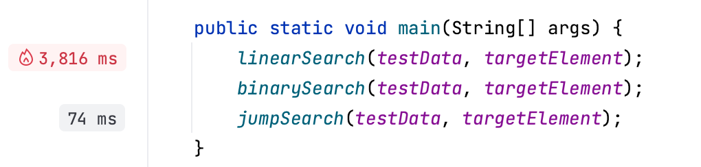

perfilador de línea
Si desea ejecutar un proceso en ejecución línea por línea,ejecución En la ventana de herramientasPerfilado de procesos | Conexión del perfilador Seleccionar .Detener la creación de perfiles y mostrar resultados Cuando presione, o cuando se complete el proceso, verá el tiempo de ejecución de las líneas que tardaron más en ejecutarse.
